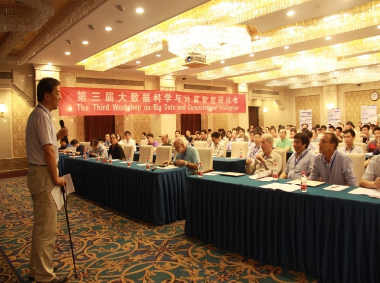
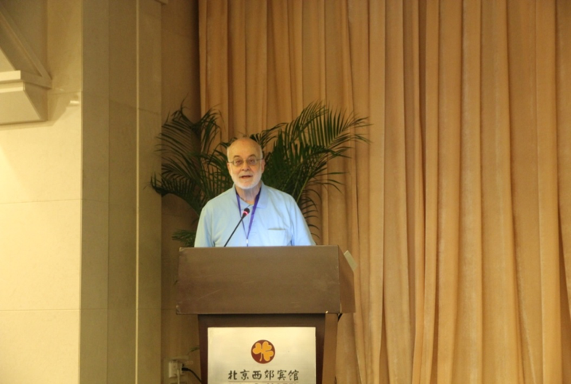
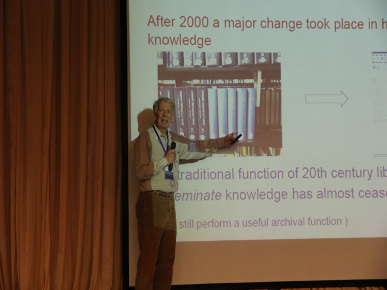
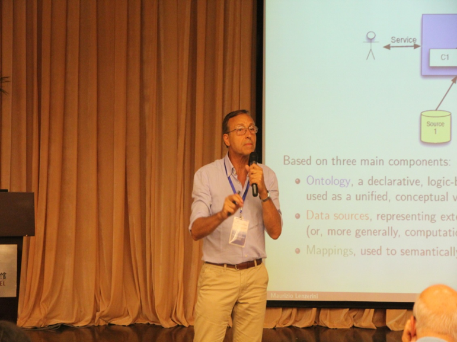
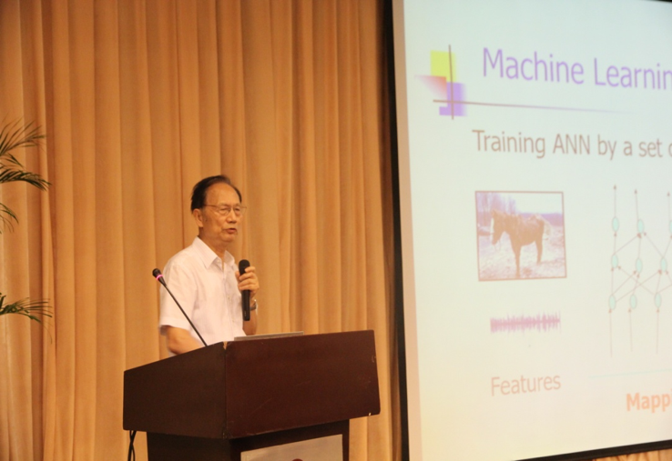
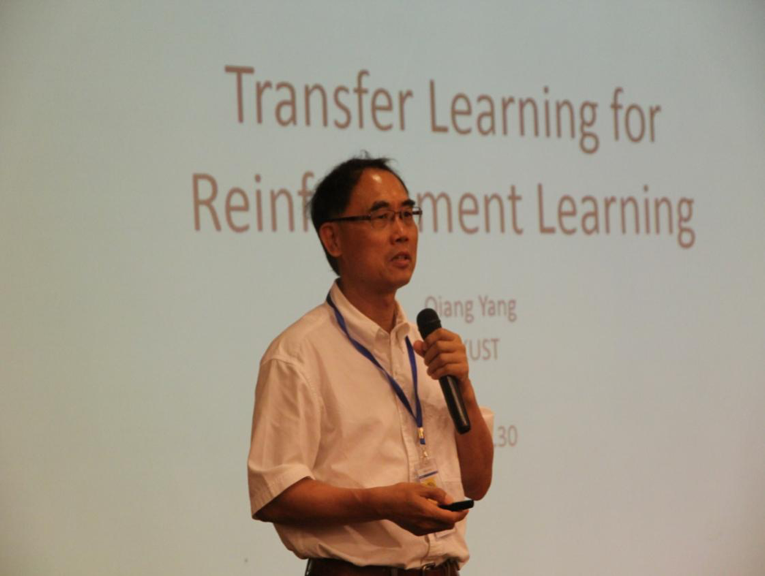

2016年7月29日-31日，由大数据科学与脑机智能高精尖创新中心（以下简称“中心”）、北京航空航天大学和“网络信息空间大数据计算理论”973项目组联合承办的“第三届大数据科学与计算智能研讨会”在北京西郊宾馆举行。本次研讨会旨在探讨大数据与计算智能领域的最新研究方向和研究成果;加强与产业界的交流合作，促进科研成果产业化进程。并以此为契机，搭建大数据研究合作发展平台，共同切磋商讨未来发展策略。

本次研讨会由高精尖中心主任怀进鹏院士、大数据科学与工程国际研究中心主任樊文飞教授、香港科技大学杨强教授担任共同主席。会议邀请了美国工程院院士、IBM研究院Ronald Fagin博士、英国皇家学院院士、爱丁堡大学Peter Buneman教授、欧洲科学院院士、罗马大学Maurizio Lenzerini教授，苏格兰皇家学院院士樊文飞教授等大数据领域国际顶尖专家学者，以及中国科学院院士、清华大学张钹教授，AAAI Fellow、IEEE Fellow、香港科技大学杨强教授，加拿大皇家学院院士、渥太华大学教授Ming Li教授、IEEE Fellow、香港科技大学Pascale Fung教授、香港中文大学Xiaogang Wang博士等人工智能领域国际顶尖专家学者进行了主题演讲，并邀请了国内相关领域的专家与学者进行了广泛、深入的学术讨论，吸引了200余人参加会议。

29日，Ronald Fagin博士，樊文飞教授，Peter Buneman教授，Maurizio Lenzerini教授，中科院软件所李昂生教授，北京航空航天大学郑志明教授，犹他大学李飞飞教授，香港科技大学易珂教授，华为诺亚方舟实验室张宝峰博士分别就大数据研究中理论与实践的交互、大数据从理论到系统到应用的探索、数据库发布的挑战、本体在数据管理的作用、结构信息理论、复杂信息系统中的动态行为、大数据分析交互系统、大数据随机抽样技术与应用、大数据研究中的实践等内容围绕大数据方向进行了主题演讲与学术报告。

30日，张钹院士，杨强教授，李明教授，Pascale Fung教授，王晓刚博士，清华大学朱军，北京航空航天大学王蕴红教授分别从深度学习走向后深度学习时代、强化学习中的迁移学习、基于深度学习的聊天机器人、情感识别下的人机互动、深度学习和神经语义的理解等内容做围绕人工智能方向进行了主题演讲和学术报告。

31日，微软亚洲研究院首席研究员周明，百度资深数据科学家沈志勇，SmartSCT共同创始人谢宁，地平线机器人技术高级工程师余轶南，九五智驾信息技术股份有限公司大数据主任李子悦，奇虎360科技有限公司首席安全官谭晓生，匡恩网络Eric Hsu博士，北京航空航天大学李建欣教授，北京大学谢冰教授，上海交通大学高晓沨副教授，中科院软件所时磊副研究员，北京航空航天大学张日崇副教授，童咏昕副教授在大数据与计算智能在工业界的应用、大数据安全、智能车联网、大数据驱使下的智能软件开发技术与环境、知识表示和嵌入等主题与会人员进行了热烈的讨论，大家集思广益、优势互补，力争在大数据与脑机智能领域做出更有显示度和影响力的贡献。

本次会议的承办单位大数据科学与脑机智能高精尖创新中心是依托我校建立的首批启动的十三个“北京高等学校高精尖创新中心”之一。中心围绕大数据科学与脑机智能技术，挑战复杂大数据可计算、群体计算可学习、多态跨域知识可关联等难题，构建国际高端人才引育平台，开创面向脑机智能的数据科学、智能科学和认知科学三大研究方向。研制自组织、自适应、自生长的脑机智能技术系统，创造以脑机智能为核心的“机器脑”和“社会脑”，为破解人口、资源、交通和环境等方面难题提供支撑。

本次会议对大数据脑机智能研究领域的研究定位、研究思路、合作研究的组织实施方式等问题形成了初步意见，旨在将中心建设成为大数据科学与产业发展的重要基地，并进一步加强与产业界合作，形成强劲合力，在国内和国际大数据研究领域占据重要地位。与此同时，本次研讨会为国内外大数据与脑机智能研究提供了宝贵的交流机会，对科技创新人才培养、科技成果转化和提升中心影响力具有重要意义。